Wordpress
Menghubungkan Web Server dan Database Server
Menginstall Wordpress Pada Ubuntu Server dengan Database dan Web Server Satu OS
Pada tutorial ini menggunakan satu OS Ubuntu server yang dipakai sekaligus sebagai Web Server dan Database Server. Dengan paket yang diperlukan pada OS adalah apache2, php, php-mysql, mysql-server, mysql-client, dan source wordpress untuk di install.
Berikut langkah Implementasinya :
- Topologi implementasi OS
- Update Ubuntu Server
- Install Paket apache2 untuk Web Server dan Cek Status
- Install Paket Database Server
- Mengaktifkan Keamanan MySql
- Menginstall PHP
- Menginstall Wordpress
- A. Buat database Wordpress di Mysql
CREATE DATABASE nama_db;
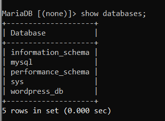- B. Membuat User untuk Wordpress
CREATE USER 'nama_user'@'host' IDENTIFIED BY 'password';
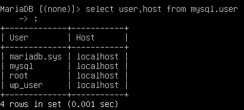- C. Memberikan Privileges User
GRANT ALL ON nama_db.* TO 'nama_user'@'localhost';
FLUSH PRIVILEGES;- D. Menginstall Wordpress
- I. Mengunduh File Wordpress di Folder tmp, Ekstrak dan di Copy ke Folder /var/www/
cd /tmp && wget https:?wordpress.org/latest.tar.gz
sudo tar -xvf latest.tar.gz
cp -R wordpress /var/www/html/- II. Mengubah Ownership Folder Wordpress
chown -R www-data:www-data /var/www/html/wordpress/- III. Mengubah File Permission dari Folder Wordpress
chmod -R 755 /var/www/html/wordpress- IV. Membuat Direktori uploads Didalam Direktori wp-content dan Mengganti Ownershipnya
mkdir /var/www/html/wordpress/wp-content/uploads
chown -R www-data:www-data /var/www/html/wordpress/wp-content/uploads- E. Wordpress Sudah Terinstal
http://ip-server/wordpress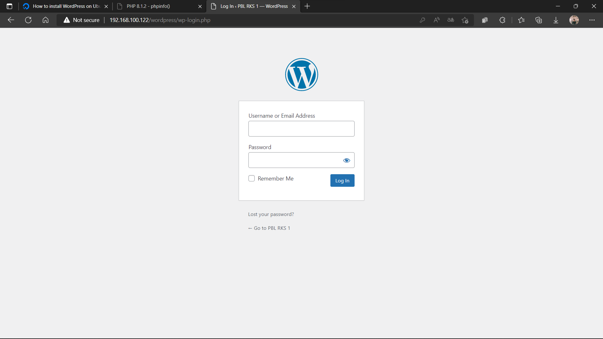
 Dimana pada bagian ini web server dan database server digabung OS sistemnya menjadi
satu kesatuan yang sama.
Dimana pada bagian ini web server dan database server digabung OS sistemnya menjadi
satu kesatuan yang sama.
apt update
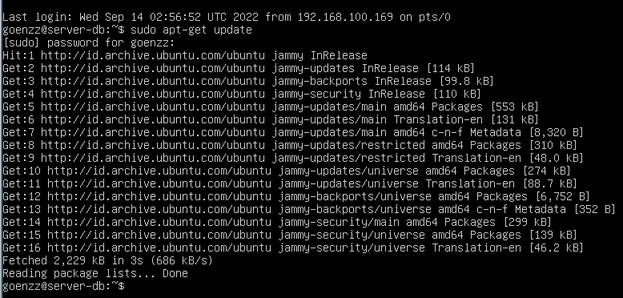
Agar patch yang dimiliki Ubuntu adalah yang terbaru.
sudo apt install apache2
apache2.service
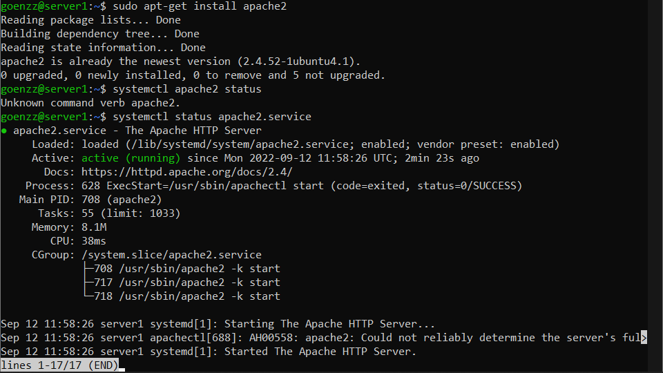
Agar patch yang dimiliki Ubuntu adalah yang terbaru.
apt install mariadb-server mariadb-client
atau mysql-server mysql-client
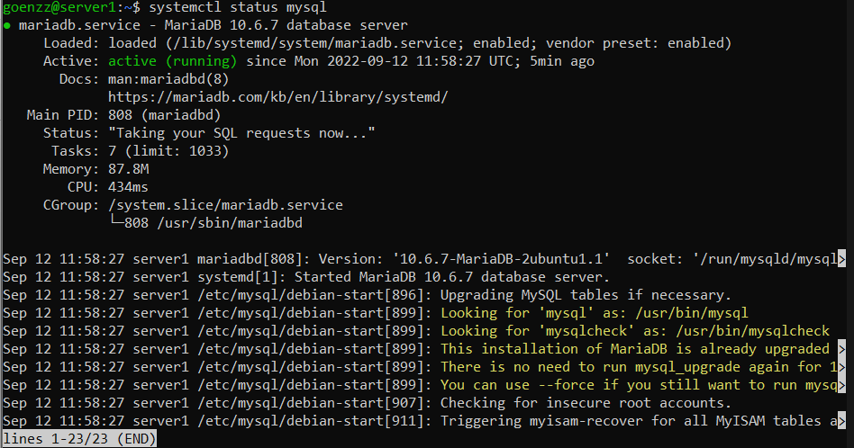
Mariadb dan mysql sama sama merupakan software yang berfungsi untuk mengelola database.
Mysql-server merupakan paket yang dimiliki dimungkinkan untuk menjalankan server MySql yang
dapat menjadi host beberapa
basis data dan memproses basis data tersebut.
Mysql-client merupakan program yang digunakan untuk berkomunikasi pada server untuk mengelola
informasi yang di kelola
oleh web server.
mysql_secure_installation
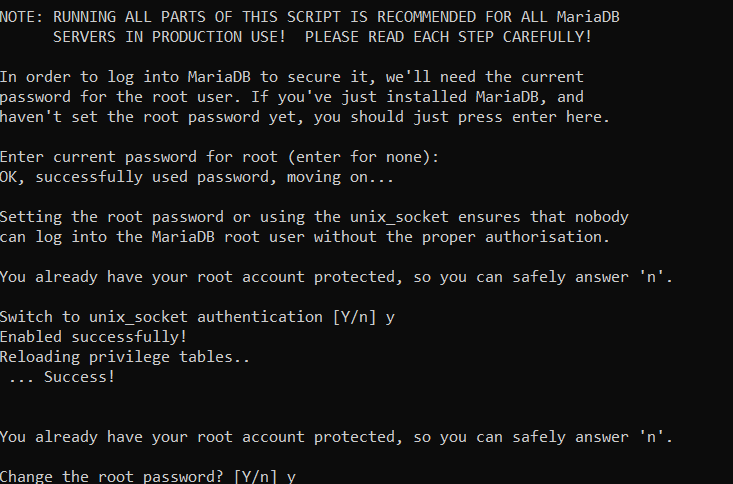
Agar saat masuk menggunakan user root juga akan meminta password.
apt install php php-mysql
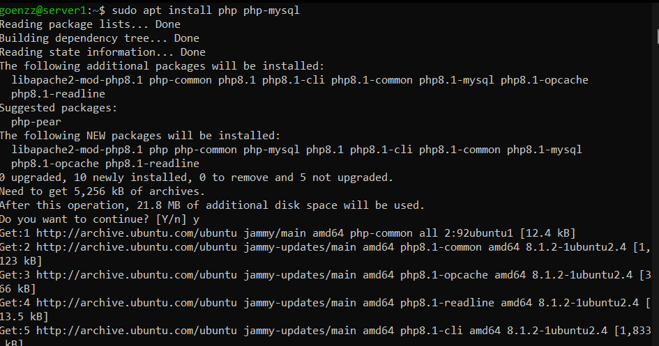
Menginstall PHP8 agar nanti wordpress bisa dipakai,Php merupakan bahasa pemrograman yang
berjalan pada server-side scripting, dimana fungsinya bisa menjadi pengembangan
website agar lebih dinamis dan bisa menyesuaikan dengan berbagai kondisi.
Php-mysql sebuah paket atau sofware menyediakan modul mysql untuk Php.
Menginstall Wordpress Pada Ubuntu Server dengan Database dan Web Server Berbeda OS
Mengatur Database Server
- Topologi implementasi OS 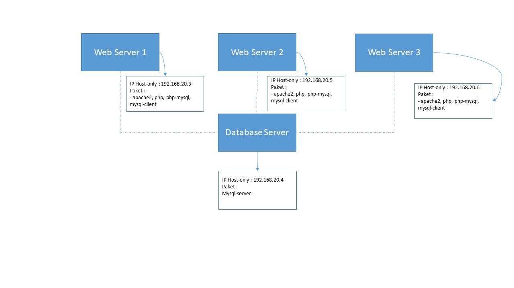 Pada gambar diatas menggambarkan bahwa kita akan membuat sebuah sistem dimana satu Database Server akan menyimpan data data dari Web Server 1 hingga Web Server 3.
- Update OS Ubuntu Server
- Install Paket Database
- Mengatur Keamanan MySql
- Mengatur bind-address menjadi IP Database Server
- Membuat User Baru dengan Menggunakan Host dari IP Web Server 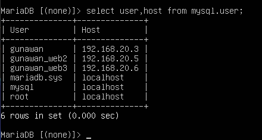
- Membuat Database yang Akan Digunakan untuk Menyimpan Data dari Wordpress 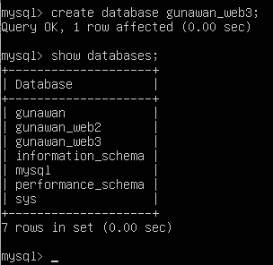
sudo apt Update
sudo apt upgrade
apt instal mariadb-server atau apt install mysql-server
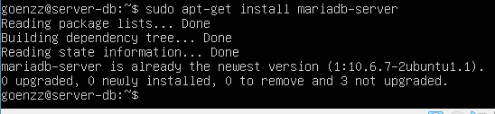
Mengatur Web Server dan Menginstall Wordpress
- Menginstall Paket yang Diperlukan
- Mengecek koneksi Web Server dengan Database
- Install Wordpress dengan perintah berikut.
- Ektrak File Tersebut
- Copy File Wordpress ke Folder /var/www/html
- Mengganti Ownership dan File Permission
- Membuat Direktori uploads Didalam Direktori wp-content dan Mengganti Ownershipnya
- Terus Ulangi Langkahnya Agar Bisa Dipakai Pada OS Lain, dan Web Wordpress Sudah Terinstall
apt install apache2
apt install mysql-client
apt install php php-mysql
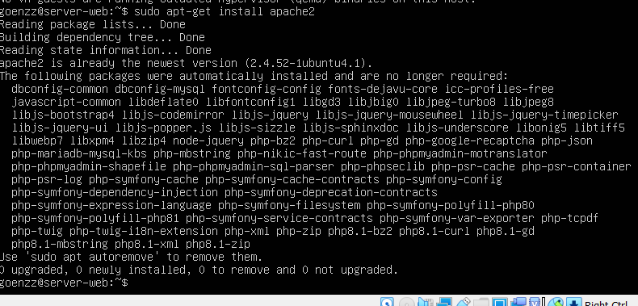
mysql -u 'user' -h 'IP Database' -p
lalu ketik :
mysql > \s
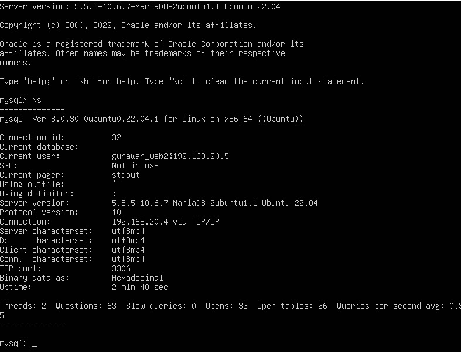
cd /tmp && wget https://wordpress.org/latest.tar.gz
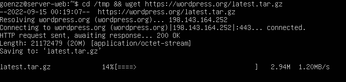
tar -xvf latest.tar.gz
cp -R 755 /var/www/html
chown -R www-data:www-data /var/www/html/wordpress/
chmod -R 755 /var/www/html/wordpress
mkdir /var/www/html/wordpress/wp-content/uploads
chown -R www-data:www-data /var/www/html/wordpress/wp-content/uploads
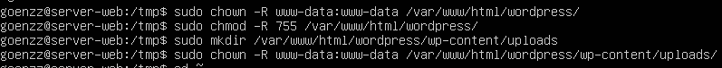
sudo apt Update
sudo apt upgrade
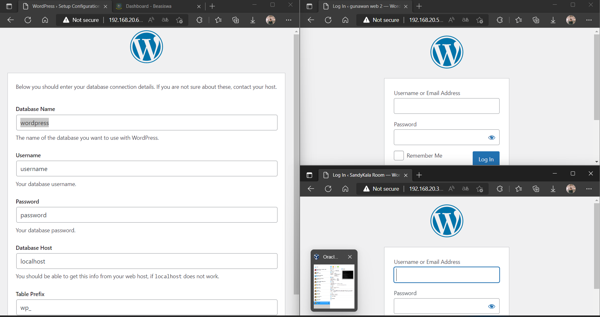
Menginstall Wordpress Pada Ubuntu Server dengan Database dan Web Server Berbeda OS
Penjelasan Kegunaan antara union, select, wait dan komentar
- UNION Digunakan untuk menggabungkan dua tabel atau lebih. 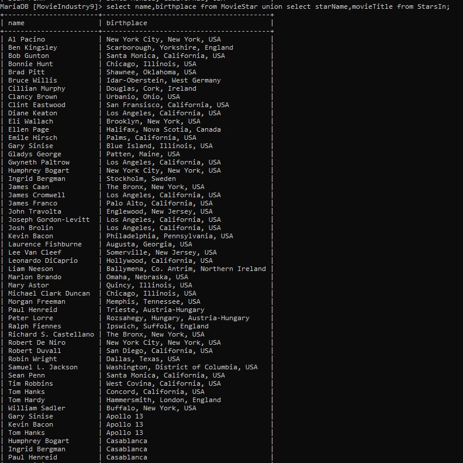
- SELECT Digunakan untuk menampilkan data dari table database 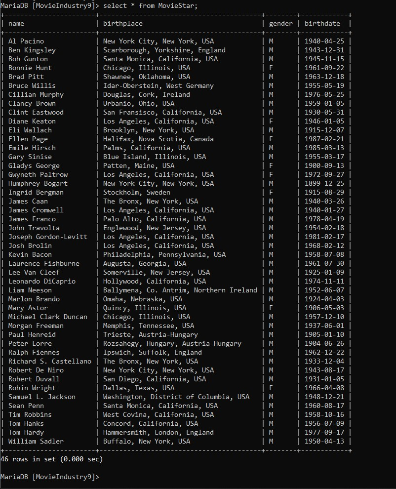
- WAIT Digunakan untuk membuat agar data keluar dalam jangka waktu tertentu
- -- (Komentar Digunakan untuk memberikan komentar pada perintah